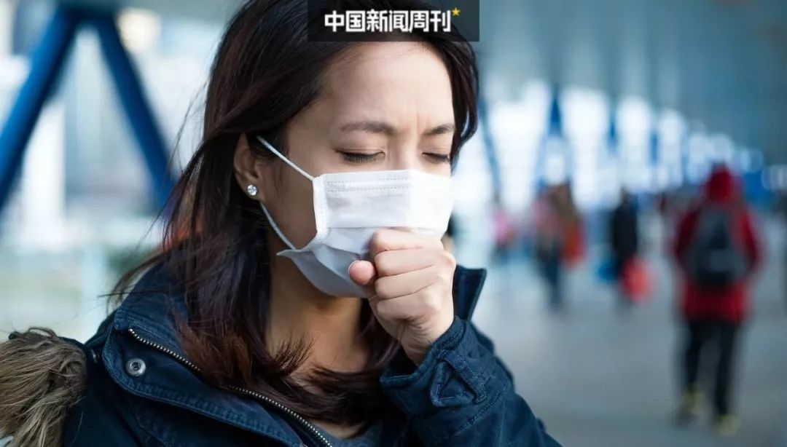

“我哭了，只求一张病床”
原文链接 备份链接 蔡婷说：“大家都荒谬到这个程度了。” 2月5日下午，湖北省人民医院拥挤的门诊部，蔡婷排了3个小时的队。这家医院昨天做了1500份新型冠状病毒的核酸检测，43岁的蔡婷和母亲的样本，也在其中。现在，蔡婷全部心思都在这上面， …

大约50名患者和30名医务人员
确诊感染了新冠肺炎

2月8日，《中国新闻周刊》独家获悉，武汉市精神卫生中心出现院内感染。据来自该院内部的消息源透露，至少有大约50名患者和30名医务人员确诊感染了新冠肺炎。
***出现聚集性发热***
官网显示，武汉市精神卫生中心（武汉市心理医院）是湖北省最大的一所三级甲等精神专科医院，现有六角亭、二七两个院区，编制床位950张，职工800余人。
武汉市民王应萍是六角亭院区老年心身病区的住院病人，她今年64岁，患有阿尔兹海默症，去年8月住进这家医院。1月26日，医院给王的老伴黄先生打来电话，称其妻发烧38度，于当天下午退烧。王应萍当天的血常规结果为白细胞正常偏低、淋巴细胞减少，与新冠肺炎早期症状相近。
27日，王应萍进行了核酸检测与CT检查。CT显示右上肺呈片状阴影，有炎症改变，2月2日核酸检测结果为阴性。据黄先生了解，此前一天，该院进行核酸检测的6人中，有4人的结果为阳性。2月2日与王应萍同批检测的6名病人中，有3人的结果为阳性，而这3名病人均与王应萍同一病房。
2月2日，王应萍再次做了核酸检测，结果依然是阴性。但在2日晚，她的护工出现了39度多的高热。护工当晚到医院发热门诊进行检测，核酸检测结果为阴性，目前在家政公司提供的住处进行自我隔离。
到了2月5日，王应萍再次发高烧，次日开始神志不清，双肺啰音。黄先生称，老伴这时候白细胞已经很高了，是最高正常值的近三倍。
王应萍的新护工也在2月5日下午出现了发热症状，并于第二天辞职。6日中午，王应萍被转入精神卫生中心的ICU接受治疗。医院告诉黄先生，病人的血氧饱和度已经下降，可能出现最坏的结果，即病人死亡。
据该院医生赵平介绍，武汉市精神卫生中心的ICU不是标准的隔离病房，也没有负压装置，只能进行气管插管、雾化等几种支持治疗。武汉金银潭医院为该院感染新冠肺炎的精神疾病病人开设了专门病区，于2月3日启用，共有30张病床。但赵平也表示，这个数字远远不够。
2月8日上午11时左右，金银潭医院因王应萍的核酸检测为阴性而拒绝收治。目前，患者已从重症转为危重症，血氧饱和度已降到70多，并出现了因呼吸困难缺氧导致的心率加快，医院给其上了呼吸机。
*** 院内感染严重，疑与调整病区有关***
据该院医生赵平介绍，王应萍的发热情况并非个案。从1月12日开始，六角亭院区三病区（女性病区）开始出现聚集性发热现象，有10余人均出现发热症状。当时，院感科将他们界定为普通感冒，并未足够重视。此后出现患者高烧不退、呼吸衰竭的现象。
武汉市精神卫生中心的第一例新冠确诊病例是在1月20日前后检出的，之后该病人被转到了武汉协和医院。24日开始，王应萍所在的老年心身病区也出现聚集性发热现象，患者多出现高热，后经核酸检测，确诊多例新冠肺炎病例。此外，该院二七院区的110病区也几乎在同一时段出现了聚集性发热情况，有20多名病人出现高热症状，此后核酸检测出至少50名阳性患者。
该院另一位工作人员告诉《中国新闻周刊》，他于2月7日做了核酸检测，结果为阳性，目前症状较轻。2月8日，二七院区成瘾病区又有三名医务人员核酸检测结果为阳性，还有其他疑似患者。检测结果为阳性的医务人员提出，希望院方能安排统一管理，但院方的回复是，医务人员自己回家隔离，联系社区，医院目前没有统一安排。
据赵平透露，目前武汉市精神卫生中心包括副院长以及多名科主任、护士长在内的至少30名医务人员确认感染了新冠肺炎。
该中心一位不愿透露姓名的医生表示，他是在1月26日医院组织新冠病毒核酸检测时，检出阳性结果的。该院另一位护士表示，她是在1月31日医院组织CT筛查时发现肺部有问题，2月2日进行了病毒核酸检测，3日检测结果显示为阳性，目前症状较轻，正在居家隔离。
《中国新闻周刊》联系到该中心分管副院长刘连忠，询问院内患者和医务人员感染情况。刘在听完记者的问题后，马上挂断电话。当记者再次拨打电话时，刘连忠不再接听。该院院长李毅也不愿透露具体情况，他表示，“我们现在有纪律要求，不能接受电话采访。”
对于造成院内感染和医务人员感染的原因，赵平认为有两个，一是医院重视程度不足，二是防护物资和药品未能及时到位。
新冠肺炎疫情暴发后，1月21日，医院就宣布封闭管理。但实际上，封闭措施实行得并不严格，有的家属还会往院里送东西，直到过年之后才逐渐严格起来。
《中国新闻周刊》从医院内部了解到，1月25日左右，医院领导要求将十九病区、二病区和早期病区合并为发热隔离病区。但合并后，新成立的病区内出现疑似病例，又随即进行病区的还原。之后，原本未出现病例的病区也出现了疑似患者。赵平说，医院在这个过程中考虑不成熟，没有从传染病的专业角度去进行调整，反而导致之前没有感染的病区出现了更多患者的感染，出现明显的聚集性发热的情况。
据赵平介绍，前期医务人员无防护装备，后期防护装备虽有改善，但是直到现在，进入污染区的医务人员仍然没有三级防护装备，只能做到二级防护，面罩等物资紧缺。
赵平称，目前，武汉市精神卫生中心累计转到其他定点医院的病人人数已达四五十人，主要去向是金银潭医院。而在2月6号，该精神卫生中心ICU已有一例确诊病人死亡，死者为老年病人。
（文中赵平为化名）
值班编辑：庄梦蕾
推荐阅读
▼
旅游业“疫”殇：春节盛宴惨淡，境内外叫“苦” 一罩难求，打击“乱涨价”管用吗
一罩难求，打击“乱涨价”管用吗
新冠肺炎患者粪便会传播病毒？专家：痊愈后最好再隔离两周

原文链接 备份链接 蔡婷说：“大家都荒谬到这个程度了。” 2月5日下午，湖北省人民医院拥挤的门诊部，蔡婷排了3个小时的队。这家医院昨天做了1500份新型冠状病毒的核酸检测，43岁的蔡婷和母亲的样本，也在其中。现在，蔡婷全部心思都在这上面， …
原文链接 备份链接 _ 新冠肺炎核酸检测阳性比率低，与病情发展阶段、采集流程是否规范、试剂盒的质量相关。为减少可能的“漏诊”，专家建议对不同厂商的试剂盒进行系统对比 _ 文 |《财经》记者 孙爱民 言清 王小 编辑 | 王小 近日在湖北 …
原文链接 备份链接 【财新网】（记者 刘登辉 黄姝伦）新冠肺炎疫情肆虐，如何准确识别病人至关重要。目前使用的核酸检测确诊新型冠状病毒感染的肺炎，被披露出存在相当比例“假阴性”的检测结果。这意味着，每日攀升的确诊病例数之外，或有大量的新冠肺 …
原文链接 备份链接 【财新网】（记者 刘登辉 黄姝伦）新冠肺炎疫情肆虐，如何准确识别病人至关重要。目前使用的核酸检测确诊新型冠状病毒感染的肺炎，被披露出存在相当比例“假阴性”的检测结果。这意味着，每日攀升的确诊病例数之外，或有大量的新冠 …
原文链接 备份链接 武汉市各区正在加紧把所有发热人员集中隔离，并进行全部发热人员的检测，目的是让疫情全部暴露出来，之后疫情防控也将从“攻坚战”转至“歼灭战” 图/法新 文 |《财经》特派武汉记者 言清 王小 编辑 | 王小 “今天的会非 …